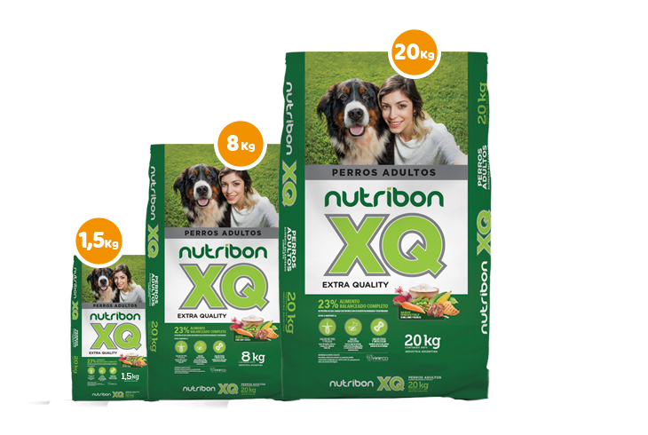

Gatos
Alimento para gatos cachorros
presentación

Características del alimento para gatos cachorros
Para suministrar a gatos desde las 3 semanas de vida hasta los 12 meses vida.
Alimento para Gatos adultos
Presentación
Características del alimento para Gatos adultos
Especialmente formulado para gatos adultos.
Perros
Alimento para perros cahorros
Presentación
Características del alimento para perros cachorros
Aporta la nutrición necesaria para perros en su primer año de vida.
Alimento para razas pequeñas
Presentación

Características del alimento para razas pequeñas
Elaborado para perros adultos de mordida chica.
Alimento para perros adultos
Presentación

Características del alimento para perros adultos
Todos los perros pueden comer este alimento.